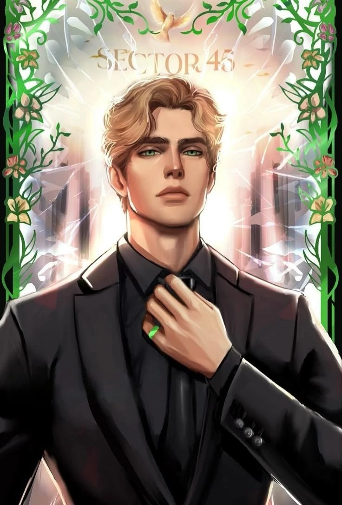

Meu primeiro post
Por: Rebeca
Bem-vinda ao meu blog literário!
0
Resenhas de livros e personagens 📚
Por: Rebeca
Bem-vinda ao meu blog literário!
Por: Rebeca

Estilhaça-me A história acompanha Juliette, uma jovem que tem um poder perigoso: o toque dela pode machucar ou até matar pessoas. Por causa disso, ela foi isolada do mundo e tratada como uma ameaça. Tudo muda quando ela é retirada desse confinamento por um regime autoritário que quer usar suas habilidades como arma. 💭 O que chama atenção no livro: o grande diferencial aqui é a narrativa. A escrita é bem poética, cheia de repetições, pensamentos intensos e frases que refletem o estado emocional da protagonista.

Aaron Warner é um personagem icônico da história. Ele é fundamental para o desenvolvimento da trama, e apesar de ser totalmente compreensível não gostar dele nos primeiros livros, a nossa percepção sobre ele muda ao longo da história.

Juliette Ferrars vive isolada por acreditar que seu toque pode matar qualquer pessoa. No início, é frágil, insegura e cheia de medo. Ao longo da história, começa a descobrir sua força e questionar o mundo ao seu redor. Sua evolução é marcada por trauma, autoconhecimento e a busca por liberdade.